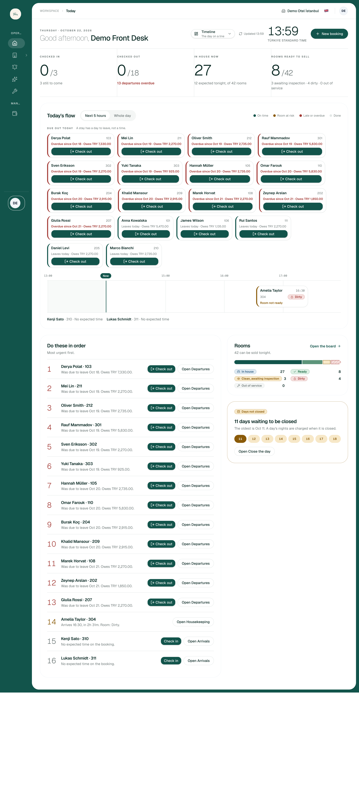
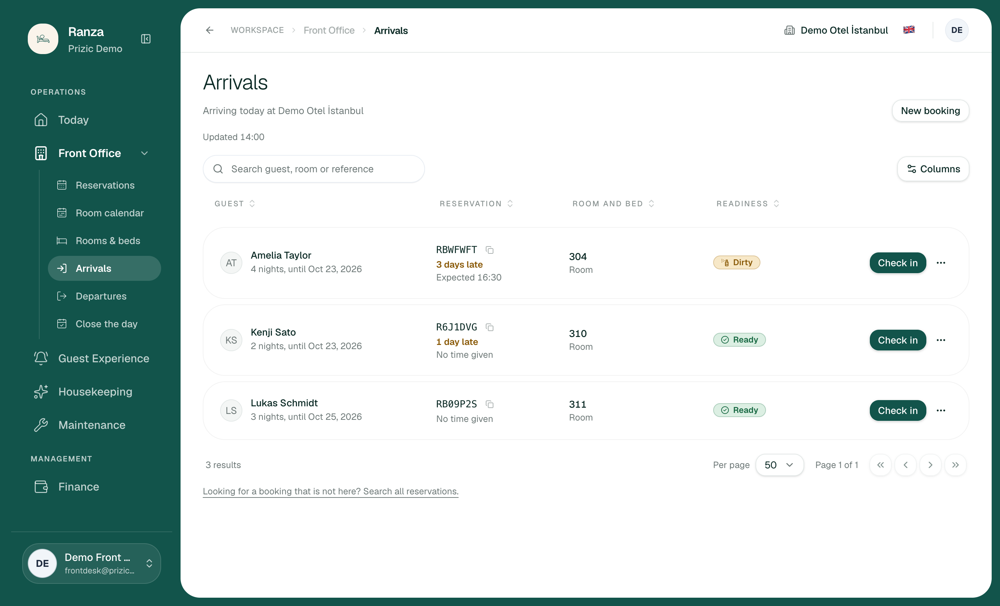
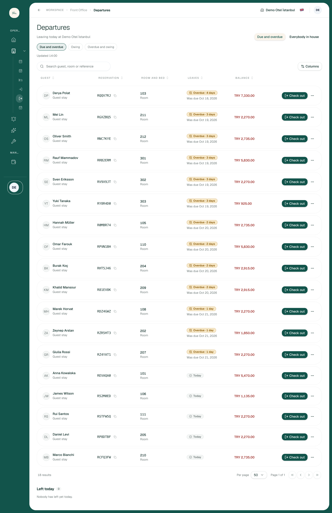
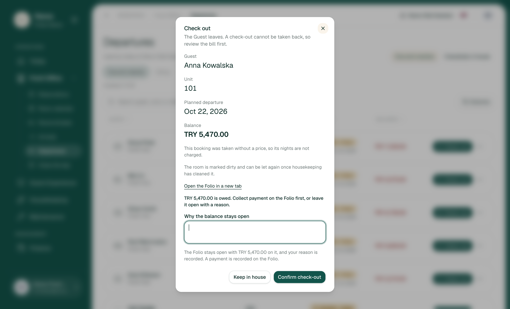
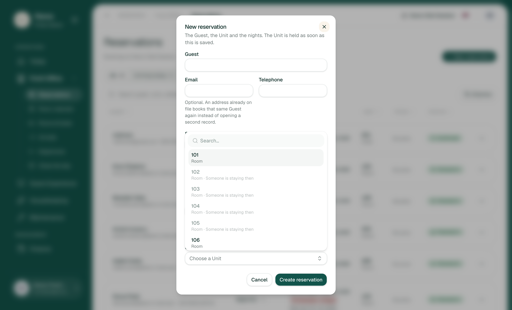
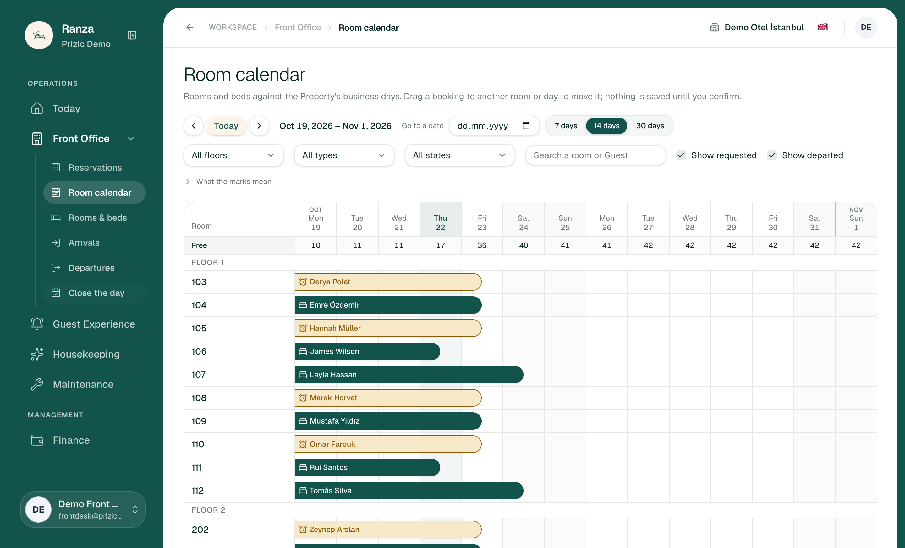
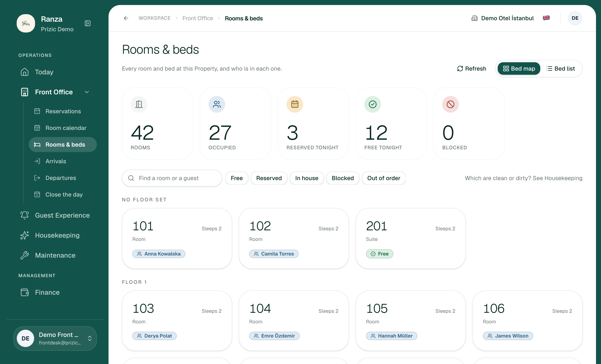
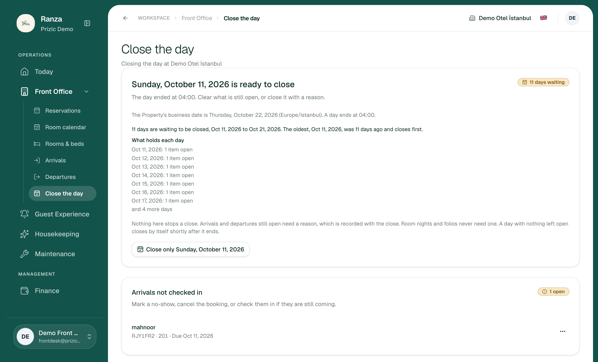
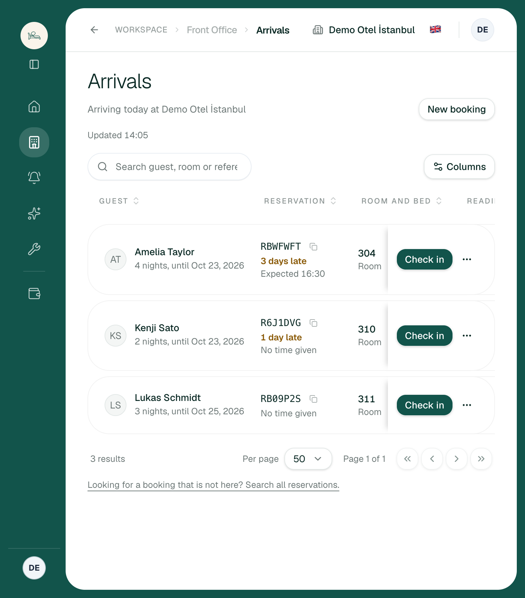
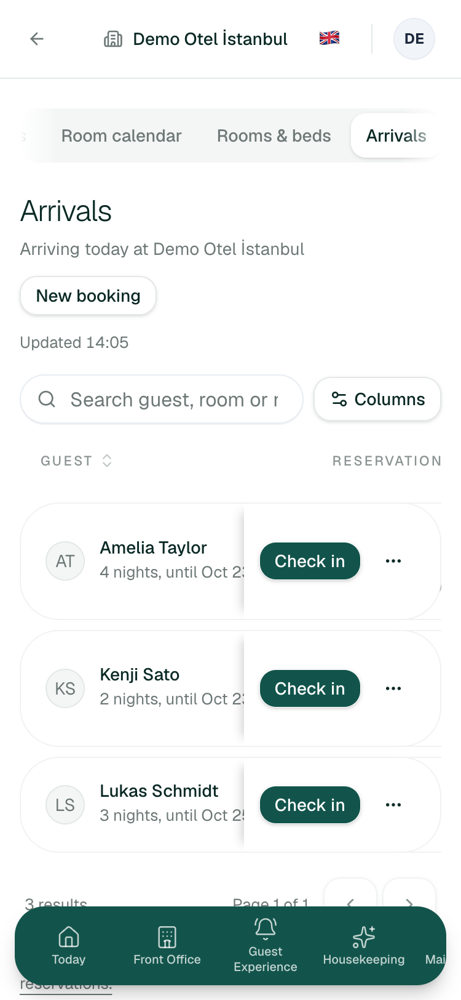

Front Office: lived-experience UX audit
How far this audit goes. Every read, search, filter,
dialog and form was exercised on the real app. Every
valid submit (check in, check out, payment, booking, close a
day) was stopped at the confirm step, because a check-in or a closed day
cannot be undone on shared staging. What happens after those buttons is
judged from the code and the feature docs and marked inferred.
Findings that depend on the demo data (13 overdue stays, 11 unclosed
days, every booking "No price") are marked data-dependent.
Items I saw once are marked "seen once"; the rest were seen on two or
more loads. I could not check the Today layouts other than Timeline,
because choosing one saves a preference.
1. Verdict
- A trained desk agent can run an ordinary shift unaided: find a guest, check in, extend, move, check out, see the room board. Everything loads in about a second, search forgives typos and phone formats, and Arabic mirrors correctly. Nothing found blocks work outright.
- The biggest risk is money at check-out. The dialog says the guest owes TRY 5,470, but taking payment means opening the Folio in another tab. The cursor starts in the "why the balance stays open" box, so the easiest path is to check out unpaid with a typed reason. After paying in the other tab, the open dialog probably refuses the confirm because the bill changed (inferred, CO-S1-12).
- The second risk is the answer to "what can I sell right now?" There are five different figures across Today, Rooms, the calendar and Housekeeping, and none of the room pickers shows which free rooms are actually clean.
- The third is bookings that never arrived. They sit on no work list until Close the day raises them days later, one day at a time.
- For daily friction: the guest row on Arrivals and Departures cannot be opened, the Front Office rail group starts collapsed, there is no search outside Reservations, and on a tablet or phone the room and readiness columns scroll out of sight before the agent presses Check in.

2. Findings
Severity: causes errors · slows me down · polish. None is "blocks work". Effort: S under a day, M a few days, L a week or more. Evidence numbers are screenshots in this folder.
| ID | Severity | Where / role / data | What happened | What I expected | Suggested fix | Effort | Evidence / basis |
|---|---|---|---|---|---|---|---|
| FO-01 | causes errors | Departures or Today → Check out. Front Desk. Anna Kowalska, 101, owes TRY 5,470. | The review dialog says "TRY 5,470.00 is owed. Collect payment on the Folio first, or leave it open with a reason." Payment is a link to the Folio in a new tab. Focus starts in the reason box. Payment there is amount, method, note, with no "pay the full balance" shortcut. Roughly 9 clicks across two tabs to pay and check out, against 3 clicks and a typed sentence to leave it open. | Take the money in the dialog, with the amount pre-filled to the balance, then confirm. Leaving it open should be the exception. | Embed the existing Record payment form in the check-out dialog, pre-fill the balance, focus it first, and put "leave open with a reason" behind a secondary action. Reload the folio version after a payment so the confirm is not refused. | M | 04, 14. Verified to the confirm step. The post-payment refusal is inferred from CO-S1-12 and CO-S1-16. |
| FO-02 | causes errors | Arrivals vs Room calendar vs Close the day. Front Desk. data-dependent. | The calendar shows six "Confirmed" bookings whose arrival date passed and who never checked in (305 Beatriz Alves, 306 Charlotte Brown, 307 Elif Şahin, 309 Ingrid Larsen, 401 Olga Ivanova, 201 "mahnoor", Oct 11). Arrivals shows 3 results and none of them. The only place they surface is Close the day, as "Arrivals not checked in", one day at a time. Elif's drawer says Confirmed, Arrives Oct 19, with no lateness cue. | A guest who has not arrived and whose date has passed is the desk's job today: check in, mark no-show, or cancel. Arrivals should list them. | Add a "Still to resolve" group to Arrivals (past-dated Confirmed bookings) with the three actions in the row menu, and a count on Today's attention card. | M | 09, 12, 02. Verified by comparing the three screens (calendar aria labels, Arrivals list, Close the day). |
| FO-03 | causes errors | Today, Rooms & beds, Room calendar, Housekeeping. Front Desk, about 14:00. | Five answers to "how many rooms can I sell tonight": Today tile "8 / 42 rooms ready to sell"; Today Rooms card "42 can be sold tonight"; Today tile "12 expected tonight, of 42"; Rooms "12 free tonight"; calendar "Free 17" under Thu 22; Housekeeping "Ready to let 8". | One number for "sell now" (vacant and clean) and one clearly labelled number for "free after today's departures", the same on every screen. | Name two figures only, give both a defined label and tooltip, and derive them from one function. Remove the sentence "42 can be sold tonight", which reads as false next to "8 ready". | M | 01, 10, 09, 11. Verified (numbers read from each screen). |
| FO-04 | causes errors | New booking → Unit picker, stay dates tonight to tomorrow. | The picker lists all 42 units in room-number order. Taken units are greyed with "Someone is staying then" but stay mixed in. There is no cleanliness, no "leaving today", no floor. The first selectable unit, 101, is occupied right now and will be dirty when its guest leaves. A walk-in agent scans 42 entries for the 8 ready rooms. | Available rooms first, the clean ones at the top, each marked ready, dirty or leaving today. A toggle to hide unavailable ones. | Sort by availability then readiness, show readiness chips, add an "available only" filter. The search box already exists. | M | 08. Verified. |
| FO-05 | slows me down | Rooms & beds, bed map. | The board shows who is in each room but not whether it is clean. The page itself says "Which are clean or dirty? See Housekeeping". Overdue guests (Derya Polat, 4 days) look identical to guests due to stay; the calendar marks them amber. | The room board is the desk's picture of the house: occupancy, readiness and overdue in one tile. | Add a readiness dot to each tile and the overdue treatment the calendar already has. | S–M | 10. Verified. |
| FO-06 | causes errors | Today vs Arrivals, same reservation RBWFWFT (Amelia Taylor, room 304, dirty). | Today: "Arrives 16:30, in 2h 31m. Room: Dirty." Arrivals: "3 days late, Expected 16:30". Her booking began Oct 19. Today also ranks her 14th, behind 13 overdue check-outs, although she is the only item with a clock and a blocked room. | One statement of lateness. A person due in 2 hours into a dirty room should out-rank a 3-day-old overdue departure. | Use one lateness function on both screens. Rank "arrival within 3 hours and room not ready" above overdue check-outs, or group the list by type. | S | 01, 02. Verified, data-dependent (an arrival that is days late is a staging artefact, but the two screens would still disagree about it). |
| FO-07 | slows me down | Arrivals and Departures rows. | Clicking a guest name does nothing (verified on both). Reservations opens a detail sheet from the same click. From Arrivals the row menu has no "open reservation" item. Balance, notes and guest count cannot be seen before pressing Check in. | The same click opens the same detail everywhere. | Make the row open the existing reservation sheet. Show the balance on Arrivals. | M | 02, 03, 06. |
| FO-08 | slows me down | Reservations → detail sheet (checked-in guest). | The sheet has dates, unit, contact, "Open folio" and "Price: No price". No balance, no amount paid, no guest count, no notes or history, and no Check out button for a checked-in guest. A floating "…" button is unlabelled. | The sheet should answer "does this guest owe anything, and what can I do now?" | Add balance and paid, the state-appropriate primary action, and the guest's open requests. | M | 06. |
| FO-09 | slows me down | Close the day, 11 days waiting. data-dependent. | One button: "Close only Sunday, October 11, 2026". The dialog needs a reason per day, so 11 closes and 11 reasons. "What holds each day" says "1 item open" for six days without saying what; only the oldest day is itemised. The word "only" implies an alternative that does not exist. The dialog does name its consequence ("Reopening a closed day is not available yet"). | A catch-up after a weekend or an outage should be one action with one reason, and each day's blocker should be visible. | Add "Close all days through Oct 21" with one shared reason, itemise each day's item, drop "only". | M | 12. Verified; the 11-close count is inferred from the single-day dialog. I did not submit. |
| FO-10 | slows me down | Departures. | Two filter systems stacked: a toggle (top right) "Due and overdue / Everybody in house", then chips "Due and overdue / Owing / Overdue and owing". "Due and overdue" appears twice. In Arabic the two are translated differently (المستحقة والمتأخرة vs المستحقون والمتأخرون). | One row of filters with distinct labels. | Rename the toggle "Today's list / Whole house" or merge it into the chips. | S | 03, 17. |
| FO-11 | polish | Across Front Office and Guest Experience. | "New booking" (Today, Arrivals) vs "New reservation" (Reservations) vs "Bookings at…". "Room" in tables vs "Unit" in the check-out dialog, the new-booking form and the picker. "Guest stay" printed under every guest on Departures and in the sheet. Guest Experience uses Title Case ("New Request", "Open Requests", "Start Working") where every other screen uses sentence case. | One word per concept, one case convention. | Pick "booking" or "reservation" and "room" or "unit" for the desk; hide "Guest stay" unless the stay is not a guest stay. | S | 03, 04, 05, 07, 13. |
| FO-12 | polish | Check-out dialog and Folio page. |
The dialog says "This booking was taken without a price, so its
nights are not charged" directly above "TRY 5,470.00 is owed",
which makes the money look wrong. The Folio says "Add a price to
the booking from the Reservations screen", but I found no price
editor there: the price comes from a hidden quoted rate
(quotedRateMinor), so the instruction points at
nothing (inferred from code).
|
A clear line: "Nights are not charged because no rate is set for this room type; the TRY 5,470 is three extras." | Reword both messages, and link to the rate setup rather than to Reservations. | S | 04, 14. data-dependent (no rates on staging). |
| FO-13 | slows me down | Room calendar, free cell. | Clicking an empty cell does nothing. A booking bar opens a drawer with Move… and "Open in Reservations" only; check-in from the drawer is deferred (RC-DEF-04). Starting a booking for a visible gap is a habit from other PMSs. | Click a free cell to start a booking with the room and date filled in. | Open the New booking dialog prefilled from the cell. Not documented as built or deferred, so it needs a row. | M | 09. Verified (click on room 403, tonight). |
| FO-14 | slows me down | Rail and header, any screen except Front Office. | The Front Office group starts collapsed on Today, so Arrivals, Departures and Reservations cost an extra click on every visit. The header has no search, so "a guest is at the desk and I do not know the booking" means group, Reservations, search box. | The three busiest screens one click away; a find-a-guest box everywhere. | Keep the group expanded for desk roles; add a header search that opens Reservations with the query. | S–M | 01, 02. Verified by snapshot. |
| FO-15 | slows me down | Arrivals at 768 px and 375 px. | At 768 the Readiness column scrolls behind the sticky Action column, so "Dirty" is invisible before pressing Check in. At 375 a row shows only the name and Check in: room, lateness and readiness are off screen. The bottom navigation overlaps the pagination and footer link, and its last item is clipped ("Mai…"). Search placeholder is cut mid-word at both widths. | The facts that decide a check-in (room, readiness, late) stay on screen on a tablet. | Collapse to a stacked row below ~900 px with room and readiness under the name; add bottom padding for the nav. | M | 15, 16. Verified. |
| FO-16 | polish | Reservations, Arrivals. | The default tab is "All", sorted oldest first from Oct 11, 10 per page, so the useful tabs (Arriving today 3, In house 27) are one click away. The search query is not in the URL (lost on refresh, cannot be shared). "Search all reservations" on Arrivals does not carry the text just typed. | Open on what the desk needs today; keep the query. |
Default to "Arriving today" or remember the last tab; put
q= in the URL and pass it on.
|
S | 05, 02. |
| FO-17 | polish | Today. | The same 13 overdue guests appear in "Due out today" cards and again in "Do these in order", about 30 buttons for 13 people, and the page is roughly 5,800 px tall at 500 px wide. Rooms card says "42 can be sold tonight" (see FO-03). Rail label "Guest Experience" truncates when active. | One list. | Let the timeline carry the cards and the ordered list carry the actions, or fold repeated rows into a count with one "Check out all overdue" review. | M | 01. Verified. |
| FO-18 | causes errors | Check-out with a balance, policy. Inferred. | A typed sentence is enough to check a guest out with any balance open; there is no amount threshold or second approver. The reason is recorded, so this is auditable, not silent. | A hotel normally limits what a desk agent can waive. | Not a UX fix; an owner decision. I would add a configurable threshold above which a manager must approve. Flagging because it compounds FO-01. | M |
04 and check-out-dialog.tsx. inferred; the
CO rows call this resolved, so it may be intended.
|
3. Jobs attempted
Pass/fail tests were written before each attempt. Times are what I measured on a fresh load; clicks are counted from the signed-in landing page. "Stopped" means I reached the confirm step and did not submit.
| Job | Pass test (written first) | Result | Time / clicks |
|---|---|---|---|
| J1 Start of shift: what needs doing? | Within 30 s, name arrivals, departures, rooms ready and anything late. | Pass, with FO-17 | Under 2 s load, 0 clicks. The 13 overdue stays crowd out everything else. |
| J2 Check in an arrival (Kenji Sato, 310, ready) | Two clicks or fewer; room and readiness visible first. | Stopped. One click from Arrivals or Today | 1 click. A dirty room (Amelia, 304) asks first ("Check in anyway"), by the code. Readiness is hidden on tablets (FO-15). |
| J3 Check out a guest who owes money (Anna Kowalska) | Pay and check out without leaving the dialog. | Fail (FO-01). Stopped | About 9 clicks and 2 tabs to pay; 3 clicks plus a typed reason to leave it open. |
| J4 Walk-in: book tonight and check in | Offered only rooms I can use; one pass from booking to check-in. | Partial (FO-04). Stopped | 6 inputs; 42-row picker with no readiness; check-in is a separate step on Arrivals. |
| J5 Find a guest from a half-remembered detail | Name without diacritics, phone with spaces and +90, lowercase reference, room number. | Pass | All 8 queries (name without diacritics, with diacritics, three phone formats, lowercase reference, room number, two words) returned one result within the 1.8 s I allowed; I confirmed the count, not each row's identity. No search outside Reservations (FO-14). |
| J6 Guest wants another night / another room | From a Departures row in three clicks or fewer, with a warning if unpriced. | Pass. Stopped | Row menu → Change departure or Move Guest (3 clicks). The dialog warns that extra nights will not be charged. |
| J7 What can I sell right now, and which rooms? | One screen gives a count and the names of clean vacant rooms. | Fail (FO-03, FO-04, FO-05) | Visited 4 screens; none lists clean vacant rooms together. |
| J8 Under pressure: guest says the room is dirty or the AC is broken | Report it in three clicks from where I am. | Partial. Not submitted | Housekeeping rows carry "Report a problem"; Arrivals offers "Open in Housekeeping". No equivalent from Departures or the room board. |
| J9 End of day with a backlog | Clear 11 days in under five minutes. | Fail (FO-02, FO-09). Stopped | One day per dialog with a reason each (inferred). |
| J10 Handle "late check-out at 14:00" (request #3, room 210) | See the request from the departure it affects. | Fail (not built) | Visible only in Guest Experience; Departures and Today show nothing for Marco Bianchi. |
Screens checked









4. Top 10 changes, ranked by time saved × how often
- I can take the money and check the guest out in one dialog. (FO-01) Every departure, 20+ a day.
- One number tells me what I can sell now, and the room lists show which free rooms are clean. (FO-03, FO-04, FO-05) Every walk-in and every phone enquiry.
- Guests who never arrived show up on Arrivals with check in, no-show and cancel next to them. (FO-02) Stops inventory and revenue drifting for days.
- I can open any guest from Arrivals or Departures and see their balance and open requests. (FO-07, FO-08) Every check-in and check-out.
- Today and Arrivals agree on who is late, and an arrival blocked by a dirty room outranks old overdue departures. (FO-06)
- On a tablet or phone I still see room, readiness and lateness before I press Check in. (FO-15)
- I can close a backlog of days once, with one reason, and see what holds each day. (FO-09)
- Arrivals, Departures and Reservations are one click away, and I can search for a guest from anywhere. (FO-14)
- I can start a booking by clicking a free room on the calendar. (FO-13)
- The same word means the same thing everywhere (booking/reservation, room/unit, sentence case). (FO-10, FO-11)
5. Inconsistencies with sibling screens
- Lateness: Today says "in 2h 31m", Arrivals says "3 days late" for the same booking (FO-06).
- Availability figures: Today, Rooms, calendar and Housekeeping disagree (FO-03). Housekeeping's "Dirty 14" counts occupied rooms; Today's "4 dirty" counts vacant ones. The scopes are not labelled.
- Overdue treatment: the calendar marks overdue guests amber; the Rooms board does not (FO-05).
- Opening a guest: Reservations and the calendar open a detail view; Arrivals and Departures do nothing on click (FO-07).
- Readiness: Arrivals and Today show it per arrival; the Rooms board and the Unit picker do not (FO-04, FO-05).
- Action wording: "Check out" (rows) vs "Confirm check-out" (dialog) vs "Keep in house" vs "Close"; Guest Experience uses "Start Working / Resolve / Cancel request" in Title Case. "Cancel request" sits at the same weight as "Resolve" in the row, one click from a destructive action.
- Back button: present on all front-office pages as ADR 0035 requires. The Folio opened from the check-out dialog has a back arrow but no route back to the check-out it came from.
6. Not built or needs backend work (not UX defects)
-
Identity capture and the police arrival and departure notification
(KBS):
deferred (
CI-DEF-05,CO-S1-33, "required before launch"). Check-in today is one button with no ID, signature, deposit or key step. This is the largest functional gap for a Turkish front desk. -
Deposits, taxes, discounts, credits, refunds, split folios and
company billing:
deferred (
FO-DEF-03,FO-DEF-05,FP-DEF-02). A payment is a record only: "no card is charged". - Adding a charge as Front Desk: the Add charge form exists but is hidden for this role with no explanation on the page. That follows the role rules, but a guest disputing a minibar line cannot be helped at the desk. Pending the owner decision RANZ-56.
-
Guest requests on Today and Departures: proposed, not
built (
TD-S6-01). Request #3 "Late check-out at 14:00" is invisible where it matters. -
Check in from the calendar drawer:
RC-DEF-04. Saved views:RC-DEF-02. Reopening a closed day: the dialog says it is not available yet. - Booking from a free calendar cell (FO-13) and a one-step "walk-in and check in": in neither the built nor the deferred rows; they need a design row first.
- Rates on staging: every booking says "No price" because no rate is set for the unit types. This is configuration, but it makes the money screens look broken to anyone auditing with this data.
7. What works well and must not regress
- Speed: Today, Arrivals, Departures and Reservations all had content in about 0.8–1.5 s. The browser console was clean on the one screen I checked (Departures); I did not check the others.
- Search forgives diacritics, phone formats, case and multi-word queries, across guest, room, reference, phone and date.
- The check-in guard asks before putting a guest into a dirty room ("Check in anyway", by the code) and re-reads readiness on the server.
- The check-out dialog names its consequence before the click, including that the room is marked dirty, that the folio stays open with the amount, and that the reason is recorded. Close the day says that reopening is not available yet.
- The calendar's accessibility is unusually good: every bar is a button with a full spoken label (state, dates, "still in the room tonight") and a stated alternative to dragging ("use Move… in its details").
- Unit picker greys taken rooms and says why ("Someone is staying then", "Booked for these nights"); the stay-date picker disables past dates.
- Row-level actions on Departures cover the real jobs (Open folio, Show on the room map, Change departure, Move Guest).
- Arabic is fully translated and mirrors correctly, including the rail and table order. Skip-to-content link exists; tab stops to the first Check in are 28 in the whole page, 9 after the skip link.
- Housekeeping orders rooms by what the desk needs first (arrival today, leaving today) and carries "Report a problem" on every row.
8. What I did not test
- Any submit that persists (see the note at the top). The after-submit behaviour of check-in, check-out, payment, new booking, change booking and close day is read from code, not observed.
- Empty and very large data: the property has 42 rooms and 40 reservations, so "empty" and "thousands" are inferred from the empty-state components and the page size of 10 and 50, not observed.
- Turkish locale, dark mode, other roles (Manager, Finance, Housekeeping), and the four other Today layouts (House map, Next up, Night desk, Overview).
- Keyboard: I counted tab stops and read the focus order; I did not drive a full check-in by keyboard.